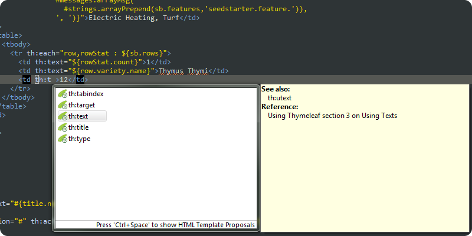

The Thymeleaf ecosystem is composed of official tools and extensions, created by the Thymeleaf Team and officially supported as a part of the project, and also unofficial tools and extensions, linked from this page but developed and maintained by Thymeleaf users outside of the Thymeleaf Project and distributed under their own license and support terms.
Official Tools & Extensions
The artifacts listed in this section are auxiliary libraries, tools or integration modules that are not directly a part of the Thymeleaf core but are part of the project, developed and supported by the Thymeleaf Team.
| Thymeleaf Testing library | |
|
The Thymeleaf Testing library allows developers to create automated tests for Thymeleaf applications and extensions in a very easy and declarative way. Among its features:
Test specifications can be as simple as this: More at the project site: https://github.com/thymeleaf/thymeleaf-testing |
|
| Thymeleaf Eclipse IDE plugin | |
|
The Thymeleaf plugin for Eclipse IDE adds content assist features that make working in Thymeleaf templates nicer and much more comfortable.
Content assist makes your life easier:

More at the project site: https://github.com/thymeleaf/thymeleaf-extras-eclipse-plugin |
|
| Thymeleaf + Apache Tiles 2 | |
|
The Thymeleaf Extras Tiles 2 library provides a dialect that allows using Apache Tiles 2 as the layout method of Thymeleaf-based applications. Features:
With this library, Tiles definitions can specify Thymeleaf templates, or even only fragments of them (in the usual th:include notation): ...and templates can call the Thymeleaf Tiles Dialect to include other parts of the layout: More at the project site: https://github.com/thymeleaf/thymeleaf-extras-tiles2 |
|
| Thymeleaf + Spring Security 3 | |
|
The Thymeleaf Extras Spring Security 3 library provides a dialect that allows integrating several authorization and authentication aspects of Spring Security into Thymeleaf-based applications. Features:
With this library, role-based access restrictions defined in Spring Security can be easily used: The security-related objects can also be included in your normal Thymeleaf expressions: More at the project site: https://github.com/thymeleaf/thymeleaf-extras-springsecurity3 |
|
| Thymeleaf + IE Conditional Comments | |
|
The Thymeleaf Extras Conditional Comments library provides support for Internet Explorer conditional comments in Thymeleaf templates.
IE Conditional comments look like this: ...and thanks to this library, they are correctly executed like: More at the project site: https://github.com/thymeleaf/thymeleaf-extras-conditionalcomments |
|
Unofficial Tools & Extensions
The artifacts listed in this are developed, maintained and hosted by the community. They are therefore not an official part of the Thymeleaf Project.
Note that a small number of these unofficial projects keep a close relation to the Thymeleaf Project or the Thymeleaf Team and they are especially recommended, which is why they appear highlighted.
Dialects
-
Layout Dialect
by Emanuel Rabina
Layout is a dialect for Thymeleaf that allows you to use layout/decorator templates to style your content, as well as pass entire fragment elements to included pages, all to help improve code reuse.
If you've ever used SiteMesh or JSF with Facelets, then the concepts of this library will be very familiar to you.
-
Dandelion Dialects
by Thibault Duchateau and Romain Lespinasse
Dandelion is a free and Open Source Java framework aimed at making web development simpler in JVM-based environments.
It helps to manipulate the web assets (JS, CSS) in many ways: good organization and classical optimizations like minification, merging, compression or caching. It also facilitates the integration of powerful JavaScript libraries thanks to a set of extensible components.
All components below, including Dandelion-Core on which they rely on, provide a Thymeleaf dialect:
- Dandelion-Core: http://dandelion.github.io/dandelion
- Dandelion-DataTables: http://dandelion.github.io/datatables
http://dandelion.github.io (Main site)
-
PagesDialect for Thymeleaf
by José Samper
PagesDialect is a custom dialect that provides some Collection processing utilities, like pagination, sorting or exporting.
-
Thymeleaf With Dialect
by Martin Frey
A dialect for Thymeleaf that allows you to use attributes with a "with" prefix to avoid having long "th:with"-expressions.
-
Thymeleaf Cache Dialect
by Martin Frey
Some parts of our webpage will not change often during the lifetime of the application or is dependent only on a usersession.
This dialect will cache the resulting output of the element it is declared on and will replace the element on a cache hit. -
HTML5 Validation Dialect
by Francisco Pérez and José Samper
This dialect reads JSR-303 annotations and modifies the HTML code introducing HTML5 form validation code matching the annotations.
-
WUIC Dialect
by Guillaume Drouet
WUIC is a Java project that helps developers manage their web statics. JS/CSS minification and aggregation, sprites computation, server/browser cache with eviction on any changes, etc. The dialect helps Thymeleaf users use WUIC features when writing their templates.
-
Data Attribute Dialect
by Max Bruchmann
Thymeleaf Data Attributes dialect evaluates thymeleaf expressions in data:* attributes and sets the result as data-* attribute of the HTML tag.
Tools and Integrations
-
Thymol
by Jim Benson
Thymol is a useful JavaScript library that allows developers to apply their th:include / th:replace fragment inclusions statically (without executing the application).
Additionally, it provides a lot of powerful features for static prototyping like allowing developers to statically evaluate conditional fragments (th:if / th:unless) on their prototypes, improving the experience of Natural Template development.
-
HDIV + Thymeleaf
by The HDIV Project
HDIV is a web application security framework that helps to avoid most common web security risks (OWASP top ten). HDIV controls the data flow between the server and the client side, applying security validations transparently and without updating applications source code.
HDIV applies integrity checks (avoiding for instance parameter tampering and URLs manipulation) to all the data that is sent to the client from the server and generic input validations to the data that come from text fields. In addition to that HDIV adds aleatory tokens to each link and form in order to avoid CSRF web risk.
-
Thymus
by Will Hoover
thymus.js is a Thymeleaf inspired JQuery plug-in that can be used as a Thymeleaf client-side controller for fragmented model/view updates via the client's browser. thymus.js is flexible enough to be ran independent of Thymeleaf, but can also be used as a powerful production companion to Thymeleaf and/or as an offline protoyping engine.
-
Spring MVC Quickstart Maven Archetype
by Rafał Borowiec
A maven archetype for web applications including Thymeleaf, Spring MVC, Spring Security, Bootstrap, JPA (Hibernate / HSQLDB / Spring Data JPA), mongoDB and JUnit.
https://github.com/kolorobot/spring-mvc-quickstart-archetype
-
Thymeleaf + Spring MVC Maven Archetype
by Álex Soto
A maven archetype for bootstrapping web applications using Spring MVC and Thymeleaf.
http://www.lordofthejars.com/2012/01/once-upon-time-and-long-ago-i-heard.html
-
Thymesheet
by Adam Perry
Thymesheet is an extension for Thymeleaf which allows you to move attributes such as th:if, th:text etc, into an external CSS3 file. This means that absolutely no Java/server logic is embedded in the HTML at all - taking natural templating one step further! Compatible with Tiles, Spring, Conditional Comments, and any Thymeleaf dialect.
-
Thymeleaf module for Play Framework 1.2
by Satoshi Takata
This module allows you to use Thymeleaf as a substitute for the groovy templates in the view layer of Play Framework 1.2.
http://www.playframework.org/modules/thymeleaf-1.0/home
https://github.com/choreo/play-thymeleaf -
Thymeleaf JAWR Extension
by Miloš Milivojević
A dialect for Thymeleaf template engine enabling the use of Jawr (a tunable packaging solution for Javascript and CSS which allows for rapid development of resources in separate module files).
Examples
-
Demo Arkadias
by Arkadia Systems
An example application created with Spring Roo + Thymeleaf + HTML5 +jQuery, hosted on AppFog.